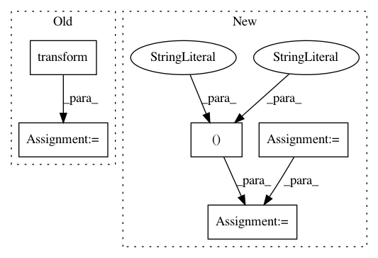

03e8525394683bb5da7668330cd910c87c7d4501,data_augmentation.py,,rand_intensity_normalisation,#Any#Any#,77
Before Change
def rand_intensity_normalisation(img, irs_model):
rand_bin = np.random.randint(0, 20)
img = irs_model.transform(img, thr=rand_bin)
img = (img - np.mean(img)) / np.std(img)
return img
After Change
def rand_intensity_normalisation(img, irs_model):
rand_bin = np.random.randint(0, 20)
for mod_i in range(img.shape[-1]):
img[:,:,:,mod_i] = irs_model.transform(img[:,:,:,mod_i], thr=rand_bin)
img[:,:,:,mod_i] = (img[:,:,:,mod_i] - np.mean(img[:,:,:,mod_i])) / np.std(img[:,:,:,mod_i])
return img
def __enumerate_step_points(starting, ending, win_size, step_size):
In pattern: SUPERPATTERN
Frequency: 3
Non-data size: 5
Instances
Project Name: NifTK/NiftyNet
Commit Name: 03e8525394683bb5da7668330cd910c87c7d4501
Time: 2017-04-03
Author: l.fidon@ucl.ac.uk
File Name: data_augmentation.py
Class Name:
Method Name: rand_intensity_normalisation
Project Name: rtavenar/tslearn
Commit Name: 85aabb5014e22659ac722280607a1f4b44e1fb32
Time: 2020-05-03
Author: romain.tavenard@univ-rennes2.fr
File Name: tslearn/shapelets.py
Class Name: ShapeletModel
Method Name: fit
Project Name: eriklindernoren/PyTorch-GAN
Commit Name: 8f420a3b35944dcfa470dee958ef61dee221ce02
Time: 2018-04-23
Author: eriklindernoren@gmail.com
File Name: implementations/dualgan/datasets.py
Class Name: MNISTM
Method Name: __getitem__